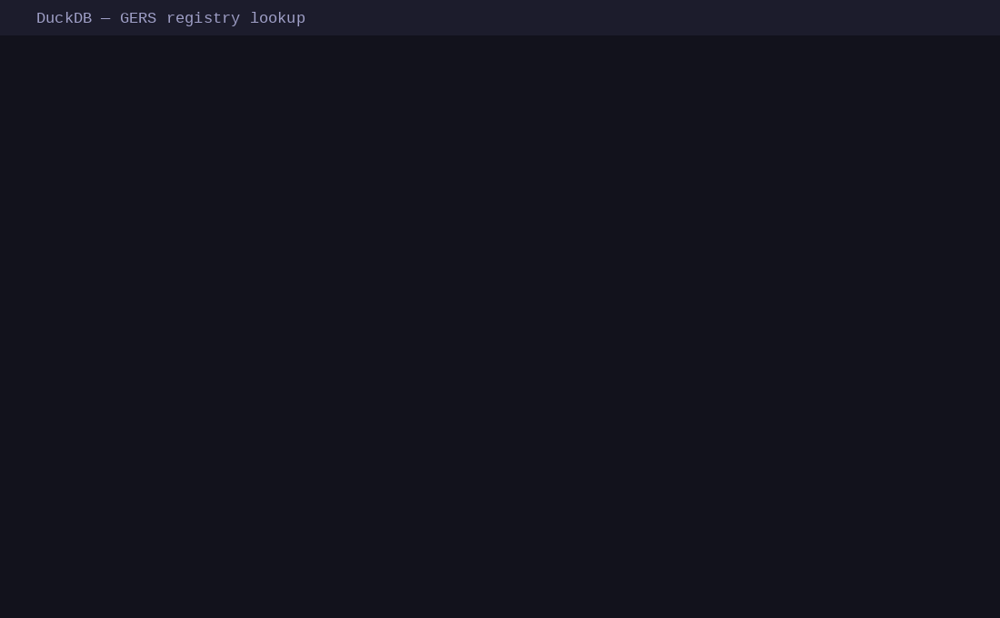

A zero-dependency JavaScript library that animates a captured shell session inside a
styled <div> —
with fully selectable text, a live timer, and
play/pause/restart controls. Pairs with
terminal-capture (Python recorder) and
terminal-gif (GIF renderer).
Loaded from example.json via
TerminalPlayer.create().
You can select and copy any text directly from the terminal output.
Use the ▶ / ⏸ and ↺ buttons in the header to control playback.
/* Embed with the JS API */ import TerminalPlayer from '../terminal-player.js'; TerminalPlayer.create('#js-player', 'example.json', { typingSpeed: 40, // ms per character pauseBeforeType: 800, // ms before typing starts finalHold: 9000, // ms to hold on the last frame loop: true, });
data-terminal-player
zero JS
No JavaScript required — just add data-terminal-player
to any <div> and include the script.
Useful for static HTML slides or documentation pages.
<!-- Just add the data attribute — no JS needed --> <div data-terminal-player="example.json" data-typing-speed="45" data-final-hold="9000" data-loop="true"></div> <script src="../terminal-player.js"></script>
Generated by terminal-gif from the same command. Use this when embedding in email, Slack, GitHub READMEs, or any context where JavaScript isn't available. Text is not selectable.

# Generate a GIF from any shell command python3 terminal-gif "python3 examples/demo_script.py" example.gif \ --title "DuckDB — GERS registry lookup" \ --width 1100 --height 680 \ --final-hold 10
terminal-capture runs the command in a real Unix PTY so programs that detect a TTY behave normally. Output chunks are timestamped as they arrive and saved to a JSON file for the player to replay.
# Record any command into a JSON session file python3 terminal-capture "duckdb -c 'SELECT 42'" session.json \ --title "My DuckDB query" # Then embed the player in your HTML TerminalPlayer.create('#term', 'session.json');